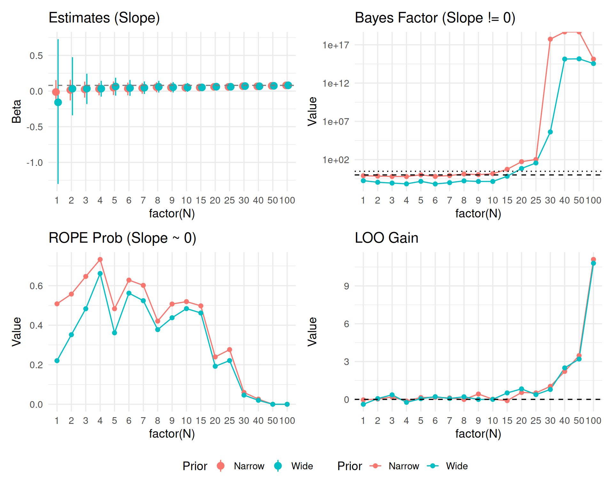
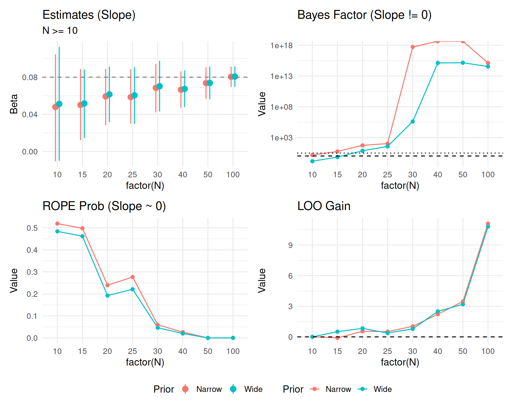
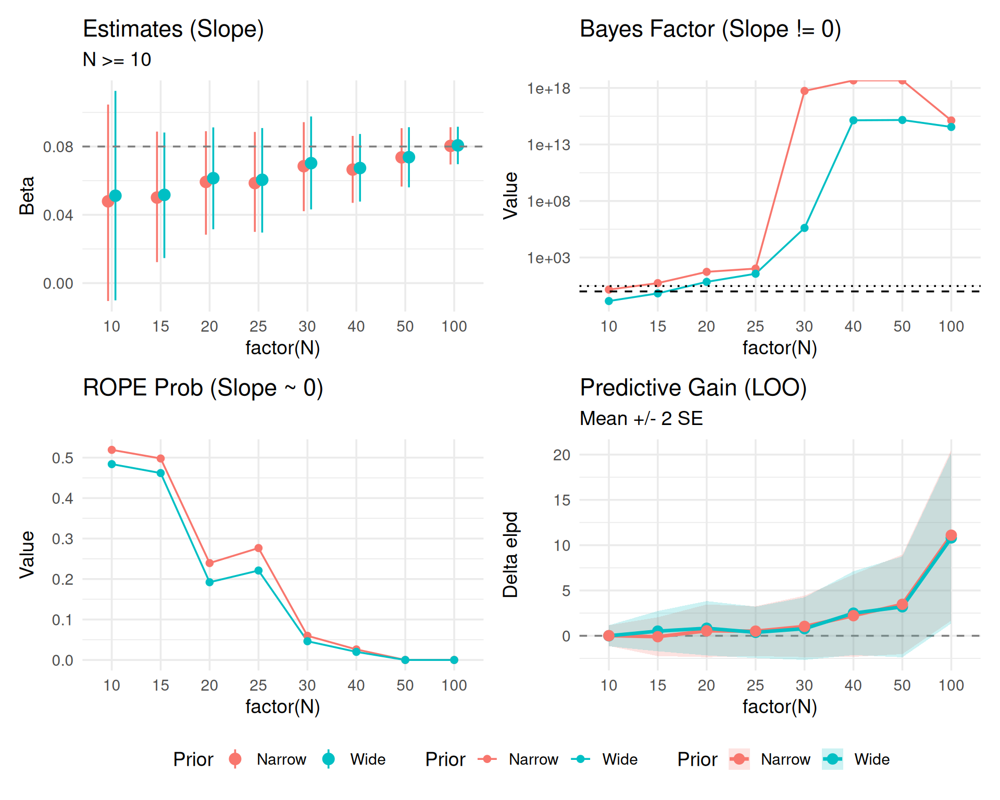
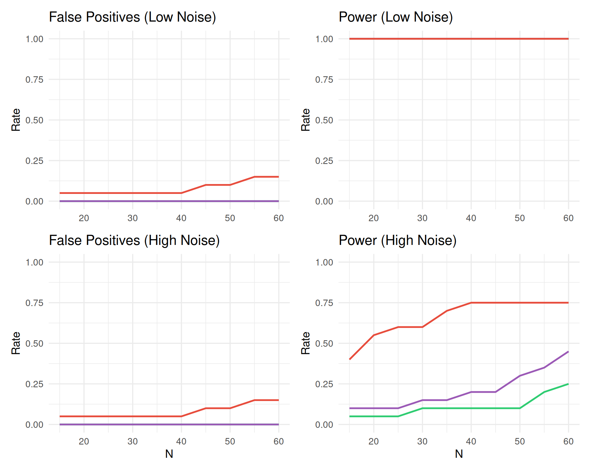

Show code
library(brms)
library(tidyverse)
library(bayesplot)
library(posterior)
library(bayestestR)
library(emmeans)
library(marginaleffects)
library(patchwork)
library(tidybayes)
theme_set(theme_minimal(base_size = 14))Understanding Divergences in Bayesian Decision Making
library(brms)
library(tidyverse)
library(bayesplot)
library(posterior)
library(bayestestR)
library(emmeans)
library(marginaleffects)
library(patchwork)
library(tidybayes)
theme_set(theme_minimal(base_size = 14))In this second part, we repeat the sequential testing process for a continuous predictor (e.g., word frequency or trial number) to see if decision metrics behave similarly.
We simulate a log-RT variable with a continuous predictor \(X\) (centered, range approx -2 to 2). True Effect of X: 0.05 (approx 5% change per unit of X).
set.seed(999)
generate_data_cont <- function(n_subj) {
n_item <- 10
expand_grid(
subject = factor(1:n_subj),
item = factor(1:n_item),
trial_x = seq(-1, 1, length.out = 10) # Continuous predictor per item/trial
) %>%
group_by(subject) %>%
mutate(
subj_intercept = rnorm(1, 0, 0.15),
subj_slope = rnorm(1, 0, 0.05)
) %>%
ungroup() %>%
mutate(
# True effect: 0.08 per unit of X
log_rt = 6.0 +
subj_intercept +
0.08 * trial_x +
trial_x * subj_slope +
rnorm(n(), 0, 0.2),
y = log_rt
) %>%
select(subject, item, trial_x, y)
}We fit three models again: 1. Null: y ~ 1 + (1|subject) + (1|item) 2. Wide: y ~ trial_x, prior normal(0, 5) 3. Narrow: y ~ trial_x, prior normal(0, 0.2)
# Same extended sample sizes
sample_sizes_cont <- c(1:10, seq(15, 30, 5), 40, 50, 100)
results_list_cont <- list()
# Generate full dataset
max_n_cont <- max(sample_sizes_cont)
data_full_cont <- generate_data_cont(max_n_cont)
for (n in sample_sizes_cont) {
# Subset Data
data_n <- data_full_cont %>%
filter(as.integer(subject) <= n) %>%
droplevels()
# Fit Models
# H0: Null (Random slopes for X could be included, but keeping simple for null)
fit_null <- brm(
y ~ 1 + (1 + trial_x | subject) + (1 | item),
data = data_n,
prior = c(
prior(normal(6, 0.5), class = Intercept),
prior(exponential(2), class = sd),
prior(exponential(2), class = sigma)
),
file = paste0("models/fit_cont_null_N", n),
silent = 2, refresh = 0, seed = 123
)
# H1 Wide
fit_wide <- brm(
y ~ trial_x + (1 + trial_x | subject) + (1 | item),
data = data_n,
prior = c(
prior(normal(6, 0.5), class = Intercept),
prior(normal(0, 1.0), class = b), # Wide for slope
prior(exponential(2), class = sd),
prior(exponential(2), class = sigma)
),
sample_prior = "yes",
file = paste0("models/fit_cont_wide_N", n),
silent = 2, refresh = 0, seed = 123
)
# H1 Narrow
fit_narrow <- brm(
y ~ trial_x + (1 + trial_x | subject) + (1 | item),
data = data_n,
prior = c(
prior(normal(6, 0.5), class = Intercept),
prior(normal(0, 0.1), class = b), # Narrow expectation for slope
prior(exponential(2), class = sd),
prior(exponential(2), class = sigma)
),
sample_prior = "yes",
file = paste0("models/fit_cont_narrow_N", n),
silent = 2, refresh = 0, seed = 123
)
# Metrics
# ROPE [-0.05, 0.05] on slope
rope_wide_df <- rope(fit_wide, range = c(-0.05, 0.05), ci = 0.95)
rope_narrow_df <- rope(fit_narrow, range = c(-0.05, 0.05), ci = 0.95)
# Select duplicate rows (Intercept + Trial_x) -> Take only trial_x (usually 2nd param)
# Safer: filter by Parameter name if possible, or take index 2
rope_wide <- rope_wide_df$ROPE_Percentage[2]
rope_narrow <- rope_narrow_df$ROPE_Percentage[2]
# Bayes Factor (Slope = 0)
bf_wide <- 1 / hypothesis(fit_wide, "trial_x = 0")$hypothesis$Evid.Ratio
bf_narrow <- 1 / hypothesis(fit_narrow, "trial_x = 0")$hypothesis$Evid.Ratio
# LOO
loo_null <- loo(fit_null)
loo_wide <- loo(fit_wide)
loo_narrow <- loo(fit_narrow)
# Calculate LOO gain and SE of the difference
diff_wide <- loo_wide$pointwise[,"elpd_loo"] - loo_null$pointwise[,"elpd_loo"]
gain_wide <- sum(diff_wide)
se_wide <- sqrt(length(diff_wide) * var(diff_wide))
diff_narrow <- loo_narrow$pointwise[,"elpd_loo"] - loo_null$pointwise[,"elpd_loo"]
gain_narrow <- sum(diff_narrow)
se_narrow <- sqrt(length(diff_narrow) * var(diff_narrow))
# Estimates
est_narrow <- fixef(fit_narrow, probs = c(0.025, 0.975))["trial_x", ]
est_wide <- fixef(fit_wide, probs = c(0.025, 0.975))["trial_x", ]
results_list_cont[[paste0("N", n)]] <- tibble(
N = n,
# Est
Est_Narrow = as.numeric(est_narrow["Estimate"]),
Low_Narrow = as.numeric(est_narrow["Q2.5"]),
High_Narrow = as.numeric(est_narrow["Q97.5"]),
Est_Wide = as.numeric(est_wide["Estimate"]),
Low_Wide = as.numeric(est_wide["Q2.5"]),
High_Wide = as.numeric(est_wide["Q97.5"]),
# Metrics
ROPE_in_prob_Narrow = as.numeric(rope_narrow),
ROPE_in_prob_Wide = as.numeric(rope_wide),
BF10_Narrow = as.numeric(bf_narrow),
BF10_Wide = as.numeric(bf_wide),
LOO_gain_Narrow = as.numeric(gain_narrow),
LOO_se_Narrow = as.numeric(se_narrow),
LOO_gain_Wide = as.numeric(gain_wide),
LOO_se_Wide = as.numeric(se_wide)
)
}
results_df_cont <- bind_rows(results_list_cont)results_df_cont %>%
pivot_longer(
cols = -N,
names_to = c("Metric", "Prior"),
names_pattern = "(.*)_(Narrow|Wide)"
) %>%
mutate(value = map_dbl(value, ~ if(is.list(.x)) as.numeric(.x[[1]]) else as.numeric(.x))) %>%
pivot_wider(names_from = Metric, values_from = value) %>%
unnest(cols = everything()) %>%
mutate(Estimate_CI = sprintf("%.2f [%.2f, %.2f]", Est, Low, High)) %>%
select(N, Prior, Estimate_CI, BF10, ROPE_Prob = ROPE_in_prob, LOO_Gain = LOO_gain) %>%
arrange(N, desc(Prior)) %>%
knitr::kable(digits = 3, caption = "Continuous Predictor: Decision Metrics")| N | Prior | Estimate_CI | BF10 | ROPE_Prob | LOO_Gain |
|---|---|---|---|---|---|
| 1 | Wide | -0.16 [-1.30, 0.73] | 1.780000e-01 | 0.220 | -0.387 |
| 1 | Narrow | -0.01 [-0.16, 0.15] | 7.920000e-01 | 0.508 | -0.038 |
| 2 | Wide | 0.03 [-0.34, 0.47] | 1.110000e-01 | 0.352 | 0.062 |
| 2 | Narrow | 0.02 [-0.13, 0.16] | 7.070000e-01 | 0.557 | 0.023 |
| 3 | Wide | 0.03 [-0.18, 0.24] | 8.600000e-02 | 0.483 | 0.361 |
| 3 | Narrow | 0.02 [-0.09, 0.13] | 6.280000e-01 | 0.647 | 0.190 |
| 4 | Wide | 0.03 [-0.08, 0.14] | 6.800000e-02 | 0.662 | -0.235 |
| 4 | Narrow | 0.03 [-0.06, 0.11] | 6.170000e-01 | 0.733 | -0.133 |
| 5 | Wide | 0.06 [-0.06, 0.19] | 1.460000e-01 | 0.361 | 0.053 |
| 5 | Narrow | 0.05 [-0.06, 0.13] | 1.023000e+00 | 0.483 | 0.150 |
| 6 | Wide | 0.04 [-0.07, 0.16] | 6.600000e-02 | 0.562 | 0.214 |
| 6 | Narrow | 0.04 [-0.06, 0.12] | 6.350000e-01 | 0.628 | 0.163 |
| 7 | Wide | 0.05 [-0.04, 0.14] | 9.800000e-02 | 0.524 | 0.069 |
| 7 | Narrow | 0.04 [-0.04, 0.11] | 8.460000e-01 | 0.602 | 0.117 |
| 8 | Wide | 0.06 [-0.02, 0.14] | 1.680000e-01 | 0.378 | 0.205 |
| 8 | Narrow | 0.05 [-0.02, 0.12] | 1.338000e+00 | 0.421 | -0.010 |
| 9 | Wide | 0.05 [-0.02, 0.13] | 1.420000e-01 | 0.438 | -0.005 |
| 9 | Narrow | 0.05 [-0.02, 0.11] | 1.094000e+00 | 0.507 | 0.426 |
| 10 | Wide | 0.05 [-0.01, 0.11] | 1.410000e-01 | 0.484 | 0.001 |
| 10 | Narrow | 0.05 [-0.01, 0.10] | 1.450000e+00 | 0.519 | 0.014 |
| 15 | Wide | 0.05 [0.01, 0.09] | 6.710000e-01 | 0.462 | 0.513 |
| 15 | Narrow | 0.05 [0.01, 0.09] | 5.445000e+00 | 0.498 | -0.100 |
| 20 | Wide | 0.06 [0.03, 0.09] | 7.014000e+00 | 0.192 | 0.833 |
| 20 | Narrow | 0.06 [0.03, 0.09] | 5.400300e+01 | 0.239 | 0.548 |
| 25 | Wide | 0.06 [0.03, 0.09] | 3.674800e+01 | 0.221 | 0.379 |
| 25 | Narrow | 0.06 [0.03, 0.09] | 1.050360e+02 | 0.277 | 0.513 |
| 30 | Wide | 0.07 [0.04, 0.10] | 4.132826e+05 | 0.046 | 0.786 |
| 30 | Narrow | 0.07 [0.04, 0.09] | 5.481336e+17 | 0.060 | 1.036 |
| 40 | Wide | 0.07 [0.05, 0.09] | 1.375817e+15 | 0.020 | 2.498 |
| 40 | Narrow | 0.07 [0.05, 0.09] | Inf | 0.026 | 2.218 |
| 50 | Wide | 0.07 [0.06, 0.09] | 1.465803e+15 | 0.000 | 3.197 |
| 50 | Narrow | 0.07 [0.06, 0.09] | Inf | 0.000 | 3.473 |
| 100 | Wide | 0.08 [0.07, 0.09] | 3.552615e+14 | 0.000 | 10.803 |
| 100 | Narrow | 0.08 [0.07, 0.09] | 1.330036e+15 | 0.000 | 11.100 |
# First, ensure all columns are properly numeric by unnesting and converting
results_clean <- results_df_cont %>%
mutate(across(everything(), ~ {
if(is.list(.x)) {
map_dbl(.x, ~ if(length(.x) > 0) as.numeric(.x[[1]]) else NA_real_)
} else {
as.numeric(.x)
}
})) %>%
# Double-check: convert to data frame to remove any remaining list structure
as.data.frame() %>%
as_tibble()
# 1. Estimates
p_est_c <- results_clean %>%
select(N, starts_with("Est"), starts_with("Low"), starts_with("High")) %>%
pivot_longer(cols = -N, names_to = c("Type", "Prior"), names_sep = "_") %>%
pivot_wider(names_from = Type, values_from = value) %>%
unnest(cols = c(Est, Low, High)) %>%
ggplot(aes(x = factor(N), y = Est, color = Prior, group = Prior)) +
geom_pointrange(aes(ymin = Low, ymax = High), position = position_dodge(width = 0.3)) +
geom_hline(yintercept = 0.08, linetype = "dashed", color = "gray50") +
labs(title = "Estimates (Slope)", y = "Beta") +
theme(legend.position = "bottom")
# 2. Metrics
plot_met_c <- results_clean %>%
select(N, contains("BF10"), contains("ROPE"), contains("LOO")) %>%
pivot_longer(cols = -N, names_to = c("MetricType", "Prior"), names_pattern = "(.*)_(Wide|Narrow)", values_to = "Value") %>%
mutate(Value = as.numeric(Value))
p_bf_c <- plot_met_c %>% filter(MetricType == "BF10") %>%
ggplot(aes(x = factor(N), y = Value, color = Prior, group = Prior)) +
geom_line() + geom_point() + scale_y_log10() +
geom_hline(yintercept = c(1, 3), linetype = c("dashed", "dotted")) +
labs(title = "Bayes Factor (Slope != 0)")
p_rope_c <- plot_met_c %>% filter(MetricType == "ROPE_in_prob") %>%
ggplot(aes(x = factor(N), y = Value, color = Prior, group = Prior)) +
geom_line() + geom_point() +
labs(title = "ROPE Prob (Slope ~ 0)")
p_loo_c <- plot_met_c %>% filter(MetricType == "LOO_gain") %>%
ggplot(aes(x = factor(N), y = Value, color = Prior, group = Prior)) +
geom_line() + geom_point() + geom_hline(yintercept = 0, linetype = "dashed") +
labs(title = "LOO Gain")
(p_est_c + p_bf_c + p_rope_c + p_loo_c) +
plot_layout(guides = "collect") & theme(legend.position = "bottom")
Checking convergence by ignoring small N chaos.
results_clean_zoom <- results_clean %>% filter(N >= 10)
# 1. Estimates
p_est_cz <- results_clean_zoom %>%
select(N, starts_with("Est"), starts_with("Low"), starts_with("High")) %>%
pivot_longer(cols = -N, names_to = c("Type", "Prior"), names_sep = "_") %>%
pivot_wider(names_from = Type, values_from = value) %>%
unnest(cols = c(Est, Low, High)) %>%
ggplot(aes(x = factor(N), y = Est, color = Prior, group = Prior)) +
geom_pointrange(aes(ymin = Low, ymax = High), position = position_dodge(width = 0.3)) +
geom_hline(yintercept = 0.08, linetype = "dashed", color = "gray50") +
labs(title = "Estimates (Slope)", y = "Beta", subtitle="N >= 10") +
theme(legend.position = "bottom")
# 2. Metrics
plot_met_cz <- results_clean_zoom %>%
select(N, contains("BF10"), contains("ROPE"), contains("LOO_gain")) %>% # Exclude SE for this long format
pivot_longer(cols = -N, names_to = c("MetricType", "Prior"), names_pattern = "(.*)_(Wide|Narrow)", values_to = "Value") %>%
mutate(Value = as.numeric(Value))
p_bf_cz <- plot_met_cz %>% filter(MetricType == "BF10") %>%
ggplot(aes(x = factor(N), y = Value, color = Prior, group = Prior)) +
geom_line() + geom_point() + scale_y_log10() +
geom_hline(yintercept = c(1, 3), linetype = c("dashed", "dotted")) +
labs(title = "Bayes Factor (Slope != 0)")
p_rope_cz <- plot_met_cz %>% filter(MetricType == "ROPE_in_prob") %>%
ggplot(aes(x = factor(N), y = Value, color = Prior, group = Prior)) +
geom_line() + geom_point() +
labs(title = "ROPE Prob (Slope ~ 0)")
p_loo_cz <- plot_met_cz %>% filter(MetricType == "LOO_gain") %>%
ggplot(aes(x = factor(N), y = Value, color = Prior, group = Prior)) +
geom_line() + geom_point() + geom_hline(yintercept = 0, linetype = "dashed") +
labs(title = "LOO Gain")
(p_est_cz + p_bf_cz + p_rope_cz + p_loo_cz) +
plot_layout(guides = "collect") & theme(legend.position = "bottom")
Including LOO uncertainty (\(SE_{diff}\)).
# Create specific LOO data frame with SE
plot_loo_unc_c <- results_clean_zoom %>%
select(N, LOO_gain_Wide, LOO_se_Wide, LOO_gain_Narrow, LOO_se_Narrow) %>%
pivot_longer(
cols = -N,
names_to = c(".value", "Prior"),
names_pattern = "LOO_(.*)_(Wide|Narrow)"
) %>% # Creates N, Prior, gain, se
mutate(
# Unnest just in case, though results_clean should be flat
gain = as.numeric(gain),
se = as.numeric(se),
Low = gain - 2*se,
High = gain + 2*se
)
p_loo_unc_c <- ggplot(plot_loo_unc_c, aes(x = factor(N), y = gain, color = Prior, group = Prior)) +
geom_hline(yintercept = 0, linetype = "dashed", color = "gray50") +
geom_ribbon(aes(ymin = Low, ymax = High, fill = Prior), alpha = 0.2, color = NA) +
geom_line(size = 1.2) +
geom_point(size = 3) +
labs(title = "Predictive Gain (LOO)", subtitle = "Mean +/- 2 SE", y = "Delta elpd")
(p_est_cz + p_bf_cz + p_rope_cz + p_loo_unc_c) +
plot_layout(guides = "collect") & theme(legend.position = "bottom")
# Ensure cache directory exists
library(lme4)
library(brms)
dir.create("cache", showWarnings = FALSE)
results_cont_path <- "cache/sim_cont_results.rds"
dir.create("models/cache_fits", recursive = TRUE, showWarnings = FALSE)
# Pre-compile a template model (Standard/Wide Prior) once to save C++ time
# We use sample_prior="yes" for Savage-Dickey BF
if (!file.exists("models/brm_template_cont.rds")) {
# Minimal data for template
tmp_dat <- tibble(subject=factor(1:2), item=factor(1:2), trial_x=c(-1,1), y=c(0,0))
prior_h1 <- c(
prior(normal(6, 0.5), class = Intercept),
prior(normal(0, 1.0), class = b, coef = "trial_x"), # Wide H1
prior(exponential(2), class = sd),
prior(exponential(2), class = sigma)
)
brm_template <- brm(
y ~ trial_x + (1|subject) + (1|item),
data = tmp_dat,
prior = prior_h1,
sample_prior = "yes",
chains = 2, iter = 2000,
file = "models/brm_template_cont",
silent = 2, refresh = 0, seed = 123
)
} else {
brm_template <- readRDS("models/brm_template_cont.rds")
}
run_cont_simulation <- function(n_sim = 20, true_effect = 0, noise_sd = 0.2, cache_prefix = "sim_cont", brm_model = NULL) {
# Ensure cache dir exists
dir.create("results_cont", showWarnings = FALSE)
results <- tibble()
for (i in 1:n_sim) {
# File-based cache for THIS simulation iteration
cache_file <- paste0("results_cont/", cache_prefix, "_iter", i, ".rds")
# 1. Load partial progress if exists
iter_results <- tibble()
if (file.exists(cache_file)) {
iter_results <- readRDS(cache_file)
}
# 2. Determine pending checks
# If file exists but is incomplete, we resume.
done_n <- numeric(0)
if (nrow(iter_results) > 0) {
done_n <- unique(iter_results$check_n)
}
check_points <- seq(15, 60, by = 5)
points_to_run <- setdiff(check_points, done_n)
if (length(points_to_run) == 0) {
# Already complete for this iteration
results <- bind_rows(results, iter_results)
next
}
# 3. Generate Data (Fixed Seed/State for Reproducibility across resumes?)
# Generating full dataset 100% freshly might drift if set.seed isn't managed per iter.
# ideally we save the dataset too? Or imply robust reproducibility via seed?
# For now, we regenerate. Note: if reusing partial results, we MUST ensure the dataset
# for the NEW steps is identical to the OLD steps.
# Quick Fix: Set seed based on iteration ID to guarantee consistency.
set.seed(999 + i)
n_param <- 100
dat_full <- expand_grid(subject=factor(1:n_param), item=factor(1:10), trial_x=seq(-1,1,length.out=10)) %>%
group_by(subject) %>% mutate(subj_int = rnorm(1,0,0.15)) %>% ungroup() %>%
mutate(y = 6 + subj_int + true_effect*trial_x + rnorm(n(), 0, noise_sd))
# Initialize stopping flags based on PREVIOUS partial results if strictly sequential
# If we stopped at N=30, we must carry that state.
stopped_p <- FALSE
stopped_bf10 <- FALSE
stopped_bf10_brms <- FALSE
if(nrow(iter_results) > 0) {
stopped_p <- any(iter_results$decision_p)
stopped_bf10 <- any(iter_results$decision_bf10)
if("decision_bf10_brms" %in% names(iter_results)) {
stopped_bf10_brms <- any(iter_results$decision_bf10_brms, na.rm=TRUE)
}
}
points_to_run <- sort(points_to_run)
for (n in points_to_run) {
curr_dat <- dat_full %>% filter(as.numeric(subject) <= n)
# A. Fast Frequentist + BIC Approx
ctrl <- lmerControl(calc.derivs = FALSE)
m1 <- suppressMessages(lmer(y ~ trial_x + (1 + trial_x|subject) + (1|item),
data = curr_dat, REML=FALSE, control = ctrl))
m0 <- suppressMessages(lmer(y ~ 1 + (1 + trial_x|subject) + (1|item),
data = curr_dat, REML=FALSE, control = ctrl))
# Stats from LogLik
ll1 <- as.numeric(logLik(m1))
ll0 <- as.numeric(logLik(m0))
df1 <- attr(logLik(m1), "df")
df0 <- attr(logLik(m0), "df")
chisq_val <- 2 * (ll1 - ll0)
p_val <- pchisq(chisq_val, df = df1 - df0, lower.tail = FALSE)
if(is.na(p_val)) p_val <- 1
n_obs <- nrow(curr_dat)
bic1 <- df1 * log(n_obs) - 2 * ll1
bic0 <- df0 * log(n_obs) - 2 * ll0
bf10 <- exp((bic0 - bic1) / 2)
# B. brms (Full Bayesian)
bf10_brms <- NA # Default if fails
if (!is.null(brm_model)) {
# Optimize: Store brms models to disk?
# User requested saving models. We can do it!
model_file <- paste0("models/cache_fits/", cache_prefix, "_iter", i, "_N", n)
# Check if model exists? brms has 'file' arg, but update() logic is manual.
# We'll use update() with 'file' argument if possible, or save manually.
# update() with file= writes the updated model to file.
# NOTE: update() with 'file' might assume the file contains the model to update FROM,
# or the location to save TO? brms::update usually just takes the object.
# Actually brms::update returns a NEW object. If we want caching, we use 'file'.
m_brms <- update(brm_model, newdata = curr_dat,
chains = 2, iter = 2000,
silent = 2, refresh = 0,
file = model_file) # Persist model!
# Test trial_x = 0
h_res <- try(hypothesis(m_brms, "trial_x = 0"), silent = TRUE)
if (!inherits(h_res, "try-error")) {
bf10_brms <- 1 / h_res$hypothesis$Evid.Ratio
}
}
# Decisions
if (!stopped_p && p_val < 0.05) stopped_p <- TRUE
if (!stopped_bf10 && bf10 > 10) stopped_bf10 <- TRUE
if (!stopped_bf10_brms && !is.na(bf10_brms) && bf10_brms > 10) stopped_bf10_brms <- TRUE
new_row <- tibble(
sim_id = i,
check_n = n,
decision_p = stopped_p,
decision_bf10 = stopped_bf10,
decision_bf10_brms = stopped_bf10_brms
)
iter_results <- bind_rows(iter_results, new_row)
# Save IMMEDIATELY after each step
saveRDS(iter_results, cache_file)
}
results <- bind_rows(results, iter_results)
}
return(results)
}
if (file.exists(results_cont_path)) {
cont_summary <- readRDS(results_cont_path)
} else {
# Run 4 Simulation Conditions with brms template
# We reuse the same template for all since the model FORMULA is the same (H1 model)
# and we just update data.
sim_cont_low_h0 <- run_cont_simulation(n_sim = 20, true_effect = 0, noise_sd = 0.2,
cache_prefix = "low_h0_brms", brm_model = brm_template) %>%
mutate(Noise = "Low Noise (SD=0.2)", Scenario = "H0 (No Effect)")
sim_cont_low_h1 <- run_cont_simulation(n_sim = 20, true_effect = 0.05, noise_sd = 0.2,
cache_prefix = "low_h1_brms", brm_model = brm_template) %>%
mutate(Noise = "Low Noise (SD=0.2)", Scenario = "H1 (Effect=0.05)")
sim_cont_high_h0 <- run_cont_simulation(n_sim = 20, true_effect = 0, noise_sd = 0.8,
cache_prefix = "high_h0_brms", brm_model = brm_template) %>%
mutate(Noise = "High Noise (SD=0.8)", Scenario = "H0 (No Effect)")
sim_cont_high_h1 <- run_cont_simulation(n_sim = 20, true_effect = 0.05, noise_sd = 0.8,
cache_prefix = "high_h1_brms", brm_model = brm_template) %>%
mutate(Noise = "High Noise (SD=0.8)", Scenario = "H1 (Effect=0.05)")
# Combine
cont_data_all <- bind_rows(sim_cont_low_h0, sim_cont_low_h1, sim_cont_high_h0, sim_cont_high_h1)
cont_summary <- cont_data_all %>%
group_by(Noise, Scenario, check_n) %>%
summarise(
prop_p = mean(decision_p),
prop_bf10 = mean(decision_bf10),
prop_bf10_brms = mean(decision_bf10_brms),
.groups = "drop"
) %>%
pivot_longer(cols = starts_with("prop"), names_to = "Method", values_to = "Rate")
saveRDS(cont_summary, results_cont_path)
}if (!exists("cont_summary")) {
if (file.exists("cache/sim_cont_results.rds")) {
cont_summary <- readRDS("cache/sim_cont_results.rds")
} else {
stop("Continuous simulation results not found. Run previous chunk.")
}
}
# 4-Panel Plot Helper
plot_panel <- function(data, title) {
ggplot(data, aes(x = check_n, y = Rate, color = Method)) +
geom_line(size=1) + ylim(0,1) +
labs(title=title, x=NULL) + theme(legend.position="none")
}
p1 <- cont_summary %>% filter(Noise == "Low Noise (SD=0.2)", Scenario == "H0 (No Effect)") %>%
plot_panel("False Positives (Low Noise)")
p2 <- cont_summary %>% filter(Noise == "Low Noise (SD=0.2)", Scenario == "H1 (Effect=0.05)") %>%
plot_panel("Power (Low Noise)")
p3 <- cont_summary %>% filter(Noise == "High Noise (SD=0.8)", Scenario == "H0 (No Effect)") %>%
plot_panel("False Positives (High Noise)") + labs(x="N")
p4 <- cont_summary %>% filter(Noise == "High Noise (SD=0.8)", Scenario == "H1 (Effect=0.05)") %>%
plot_panel("Power (High Noise)") + labs(x="N")
(p1 + p2) / (p3 + p4) + plot_layout(guides = "collect") &
scale_color_manual(values = c("prop_p"="#E74C3C", "prop_bf10"="#2ECC71", "prop_bf10_brms"="#9B59B6"),
labels = c("prop_p"="P-Value < .05", "prop_bf10"="BIC BF > 10", "prop_bf10_brms"="brms BF > 10"))